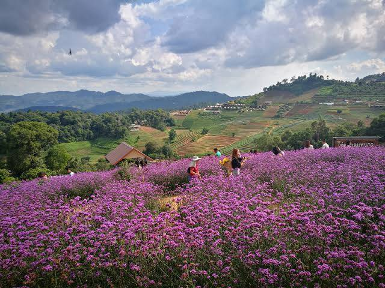

วัดพระธาตุดอยสุเทพราชวรวิหาร
อีกหนึ่งแลนด์มาร์กสำคัญของจังหวัดเชียงใหม่ ใครที่มาเที่ยวเชียงใหม่แต่ไม่ได้มากราบไหว้ก็เหมือนมาไม่ถึง พร้อมกับเยี่ยมชมสถาปัตยกรรมแบบล้านนาจากการสร้างเจดีย์ทรงเชียงแสนและชื่นชมความงามของจังหวัดเชียงใหม่จากจุดชมวิวบนวัดพระธาตุดอยสุเทพฯแห่งนี้
บ้านป่าบงเปียง
สถานที่พักผ่อนเชียงใหม่ที่เปิดให้ชื่นชมศิลปะจากนาข้าวขั้นบันไดของชาวบ้านในอำเภอแม่แจ่ม และกล่าวสายัณห์สวัสดิ์พร้อมกับชมดวงอาทิตย์ที่ลาลับขอบฟ้า ที่นี่ยังเปิดเป็นโฮมสเตย์สามารถพักผ่อนนอนหลับและกินอาหารเด็ด ๆ ของอำเภอแม่แจ่ม
ม่อนแจ่ม

จุดชมวิวและที่พักผ่อนเชียงใหม่ที่สามารถมองเห็นวิวทิวทัศน์ของภูเขาที่สลับซับซ้อนกันไปมาเป็นอีกหนึ่งที่เที่ยวเชียงใหม่ ยอดฮิต ที่นี่อยู่ห่างจากอุทยานแห่งชาติดอยสุเทพ - ปุย ประมาณ 12 กิโลเมตร ใช้เวลาเดินทางร่วม 20 นาที